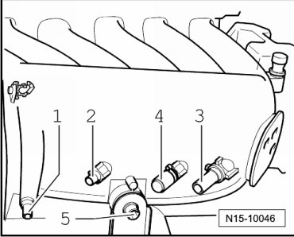
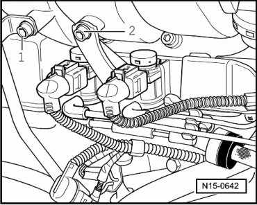
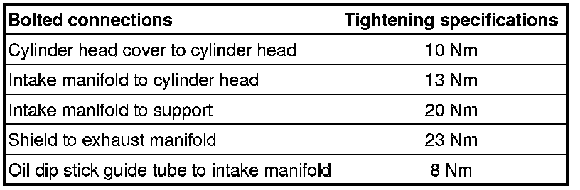

Cylinder Head Cover
Cylinder Head Cover
Special tools, testers and auxiliary items required
• Spring-type clip pliers (VAS 5024 A)
• Torque wrench (V.A.G 1331)
• Assembly tool (T10118)
• Puller (T10095 A)
Removing
- All cable ties which are opened or cut open when removing, must be replaced in the same position when installing.
- Remove engine covers.
- Remove ignition coils with power output stage --> [ Ignition Coil with Power Output Stage ] Service and Repair.
- Remove intake hose between mass air flow sensor (G70) and throttle valve control module (J338).
- Disconnect 6-pin connector from throttle valve control module (J338), as well as 2-pin connector from evaporative emission (EVAP) canister purge regulator valve (N80) and crankcase breather valve.
- Pull vacuum hoses - 1 - from intake manifold.

- Pull vacuum hose - 4 - from intake manifold.
- Remove securing bolt - 5 - for intake manifold support.
- Unbolt intake manifold supports from right and left of intake manifold.
- Disconnect crankcase breather hose at cylinder head cover.
- Now remove securing bolts - 1 - and - 2 - from intake manifold.

- Pull off vacuum hose from intake manifold change over vacuum actuator.
- Unbolt coolant pipe on front of cylinder head.
- Remove intake manifold and place it on a suitable surface so that vacuum actuator is not damaged.
• Seal the intake ports in the intake manifold and in cylinder head with clean cloths.
- At front of cylinder head cover, unbolt bracket for wiring to Knock Sensor (KS) 1 (G61) and oil level thermal sensor (G266).
- Remove the cylinder head cover.
Installing
Installation is performed in the reverse order of removal, noting the following:
• First bolt intake manifold to cylinder head. Then, fasten bolts for shield and intake manifold support.
• Ensure fuel hoses are seated securely.
Tightening Specifications
